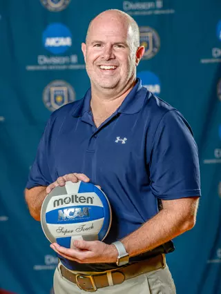
Interim Co-Head Coach
MSJ Men's Volleyball
Mount St. Joseph Men's Volleyball is an NCAA Division III program focused on player development, preparation, and a team-first culture.

Leadership

Interim Co-Head Coach
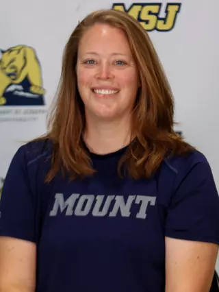
Interim Co-Head Coach
2025–26 roster
 1
1S · 6'1" · Fr.
Jeffersonville, Ind. · Floyd Central
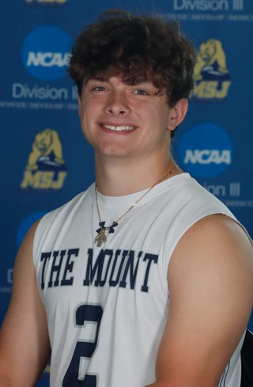
2S · 5'8" · So.
Cincinnati, Ohio · Elder
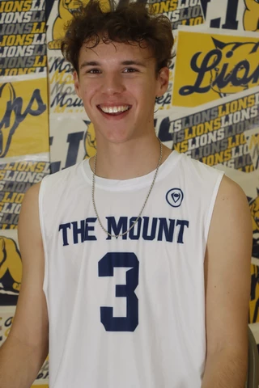
3RS · 6'0" · Jr.
Loveland, Ohio · Loveland
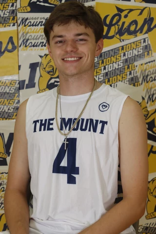
4OH · 6'0" · Sr.
Fairfield, Ohio · Fairfield
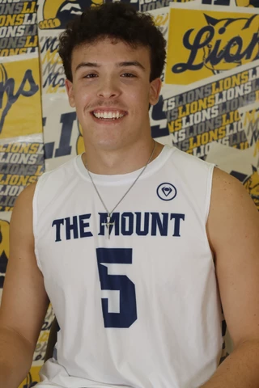
5DS · 5'10" · So.
Cincinnati, Ohio · Elder
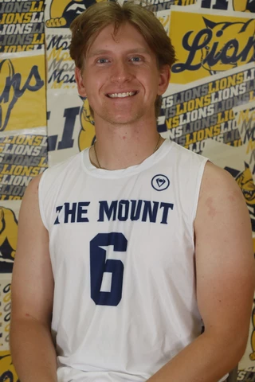
6RS · 6'0" · Sr.
Hamilton, Ohio · Badin
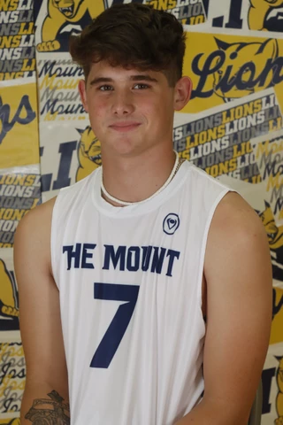
7MB · 6'3" · Fr.
Cincinnati, Ohio · Oak Hills
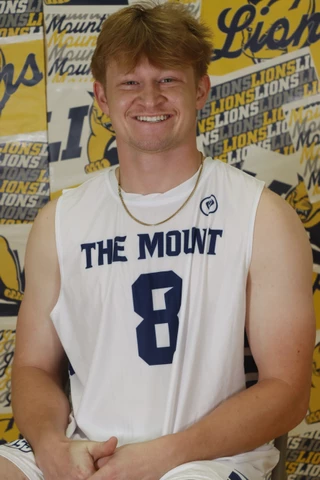
8OH · 5'10" · So.
Louisville, Ky. · St. Xavier (Ky.)
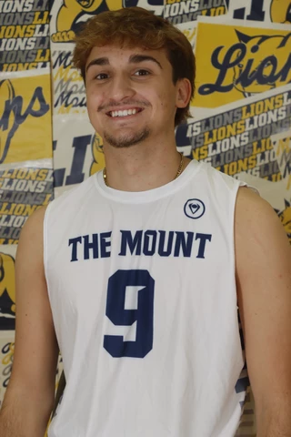
9DS · 5'8" · Fr.
Cincinnati, Ohio · LaSalle
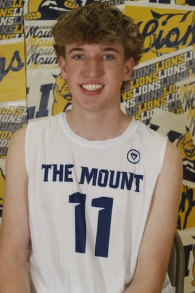
11OH · 6'3" · Fr.
Dublin, Ohio · Dublin Jerome
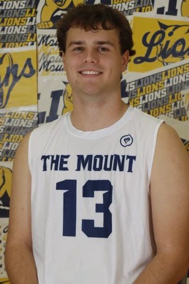
13OH · 6'0" · Sr.
Cincinnati, Ohio · Moeller
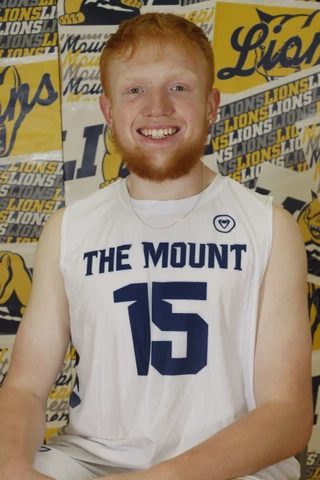
15OH · 6'0" · So.
Cincinnati, Ohio · West Clermont
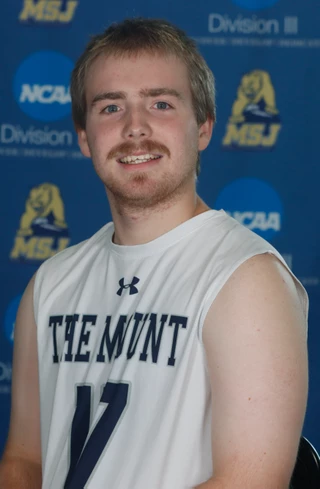
17DS · 5'7" · Sr.
Louisville, Ky. · St. Xavier (Ky.)
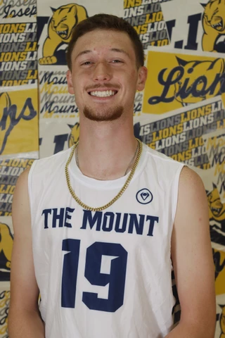
19MB · 6'3" · Jr.
Cincinnati, Ohio · LaSalle
Visit MSJ